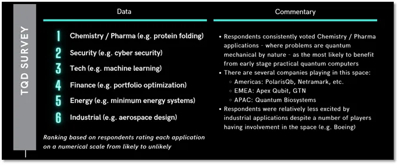

Dasafios e Oportunidades Computação Quântica

Dasafios da Computação quântica
Correção de Erros
Devido à sensibilidade dos qubits, erros podem ocorrer facilmente. A correção de erros quânticos é um campo complexo em si mesmo e é necessária para tornar os cálculos quânticos confiáveis.A maioria dos especialistas consideraria esse o maior desafio. Os computadores quânticos são extremamente sensíveis a ruídos e erros causados por interações com seu ambiente, Calor e luz podem causar decoerência quântica, onde os qubits perdem suas propriedades quânticas. Isso pode fazer com que erros se acumulem e degradem a qualidade da computação. O desenvolvimento de técnicas confiáveis de correção de erros é, portanto, essencial para a construção de computadores quânticos práticos.
Desafios de hardware
Existem várias abordagens para a construção de qubits (circuitos supercondutores, íons aprisionados, qubits topológicos, etc.), cada uma com seu próprio conjunto de desafios. A criação de qubits escalável,pois atualmente temos 433 qubits e precisará no mínimo 30 milhões de quibits, tolerante a falhas estáveis e de alta qualidade é um grande obstáculo na computação quântica.Existem muitas tecnologias qubit diferentes, cada uma com seus próprios pontos fortes e fracos, e o desenvolvimento de uma tecnologia qubit escalável e tolerante a falhas é o principal foco de pesquisa, além do alto custo.
Escalabilidade
Embora os computadores quânticos tenham mostrado um desempenho impressionante para algumas tarefas, eles ainda são relativamente pequenos em comparação com os computadores clássicos. Escalar computadores quânticos para centenas ou milhares de qubits, mantendo altos níveis de coerência e baixas taxas de erro, continua sendo um grande desafio.
Interface de Computadores
Os computadores quânticos não substituirão os computadores clássicos; eles servirão como tecnologia complementar. O desenvolvimento de métodos eficientes e confiáveis para a transferência de dados entre computadores clássicos e quânticos é essencial para aplicações práticas.
Talentos treinados
O número de pessoas devidamente educadas e treinadas para entrar na força de trabalho quântica é pequeno e espalhado por todo o mundo. Encontrar os trabalhadores certos é um desafio. Em um cenário de galinha e ovo, não aumentaremos o número de pessoas motivadas a entrar na força de trabalho quântica até que tenhamos computadores quânticos mais práticos e não teremos computadores quânticos mais práticos até que tenhamos mais pessoas motivadas a se tornarem parte da força de trabalho quântica.

Vídeos para aprofundamento sobre os desafios da Computação Quântica
Professor Pedro Patrício do Departamento de Matemática & Centro de Matemática, Universidade do Minho fala sobre os desafios da Computação Quântica na criptografia moderna Desafios da Computação Quântica na criptografia modernaO Prof.Dr David DiVincenzo fala sobre os desafios para a construção de dispositivos de computação quântica.O video está em inglês Desafios atuais para a computação quântica
Opotunidades
Os potenciais de aplicação comercial dos computadores quânticos.
A Química Quântica (por exemplo, para descoberta de medicamentos) permanece em primeiro lugar na pesquisa TQD, seguida pela Segurança. Uma Internet Quântica, por exemplo, depende principalmente da Segurança Quântica. Como estamos agora na era do Noisy Intermediate-Scale Quantum (NISQ), esperamos ver o computador quântico tolerante a falhas (FTQC) fechado até o ano de 2035 (Antonio Manzalini, 2020). Além das aplicações de computação quântica, outros casos de utilização potenciais, como a detecção quântica (por exemplo, para imagens médicas e navegação sem GPS a partir de 2025) e a comunicação quântica (por exemplo, Internet quântica até 2035).
3 empresas de computação quântica do futuro
Abelian aplica algoritmos criptográficos pós-quânticos para garantir a segurança e privacidade a longo prazo do ouro digital dos clientes, ABEL. Abelian garante que os endereços das carteiras sejam ocultos e não rastreáveis, ao mesmo tempo que protege o valor nas transações ocultas usando esquemas de assinatura em anel vinculáveis baseados em treliça. Cadeias laterais, contratos inteligentes e interoperabilidade serão desenvolvidos para apoiar vários aplicativos e iniciativas DeFi, Metaverse e Web3. Abelian está sediada em Irvine, Califórnia, e é liderada por criptógrafos, matemáticos, engenheiros, desenvolvedores e especialistas em segurança cibernética.
saiba mais: AbelianPLANQC Uma startup de computação quântica de átomo neutro emergiu do Vale Quantum de Munique em 2022 (e é a primeira a fazê-lo), a equipe fundadora do planqc composta por Alexander Glätzle, Sebastian Blatt, Johannes Zeiher, Lukas Reichsöllner, Ann-Kristin Achleitner e Markus Wagner combina décadas de pesquisa internacional sobre tecnologias quânticas de átomos neutros. Os computadores quânticos do planqc são construídos com base na precisão de relógios atômicos, microscópios quânticos de gás e portas Rydberg de alta velocidade e armazenam informações em átomos individuais – os melhores qubits da natureza.
saiba mais: PLANQCBOHR QUANTUM TECHNOLOGY é uma startup com sede em Pasadena, Califórnia, que desenvolveu um sistema de rede quântica pronto para uso comercial que pretende comercializar a partir de IP publicado em dezembro de 2020 (tecnologia licenciada da CalTech e Fermilab). Eles estão transferindo a complexidade das redes baseadas em luz para um rack que permite a rede de dados quânticos. Isso permite o dimensionamento de computadores quânticos (ou seja, ser capaz de conectar QPUs que são restritos por uma câmara criogênica) e sua utilidade geral (por exemplo, emaranhar e desembaraçar chips em um edifício ou mesmo em cidades). A empresa também está interessada em redes à distância e em permitir redes de longa distância de memórias quânticas. Sua tecnologia oferece tempo preciso, computadores em rede e comunicação comprovadamente segura.
saiba mais: BOHR QUANTUM TECHNOLOGYComo podemos contribuir para avanços na área
- Contribua para projetos de código aberto: Plataformas de computação quântica como Qiskit recebem contribuições bem-vindas da comunidade. Você pode relatar e corrigir bugs, propor novos recursos e elaborar documentação essencial. Você não precisa necessariamente de um amplo conhecimento de computação quântica para contribuir. Se você estiver familiarizado com linguagens comuns de desenvolvimento da Web, como HTML, CSS, Sass (SCSS), Javascript e Typescript, encontrará muitos lugares para contribuir com o Qiskit.
- Contribua com Recursos Educacionais: Você pode contribuir para projetos como o Qiskit Textbook. Isso oferece uma oportunidade de fornecer ferramentas de código aberto acessíveis e recursos educacionais para a próxima geração de pesquisadores e inovadores de computação quântica.
- Desenvolva habilidades de computação quântica: Você pode aprofundar sua compreensão da computação quântica e da própria informação, bem como de suas formas quânticas generalizadas. Esse conhecimento pode ser aplicado para contribuir com o desenvolvimento da computação quântica.
- Pesquisa e Desenvolvimento: Os profissionais também podem contribuir melhorando os blocos de construção fundamentais dos computadores quânticos, desenvolvendo controle sofisticado para aproveitar ao máximo qualquer grupo de qubits e conduzindo pesquisas de ciência da computação que, em última análise, tornarão os computadores quânticos mais fáceis de usar